Na página de Produtos da Country Brothers, você encontrará uma variedade de opções saudáveis e deliciosas que refletem o compromisso da nossa empresa com a agricultura natural e sustentável. Cada produto que oferecemos é cuidadosamente cultivado, colhido e embalado para garantir qualidade e frescor excepcionais.

 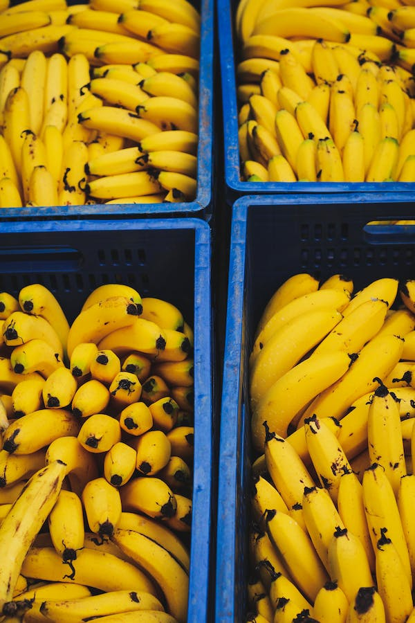
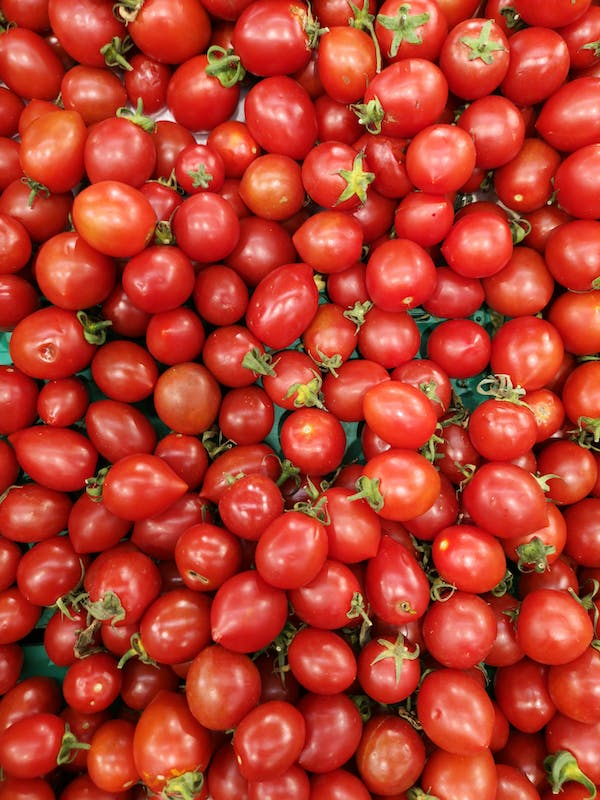
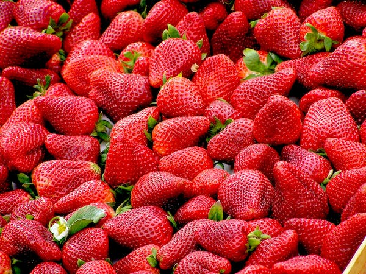
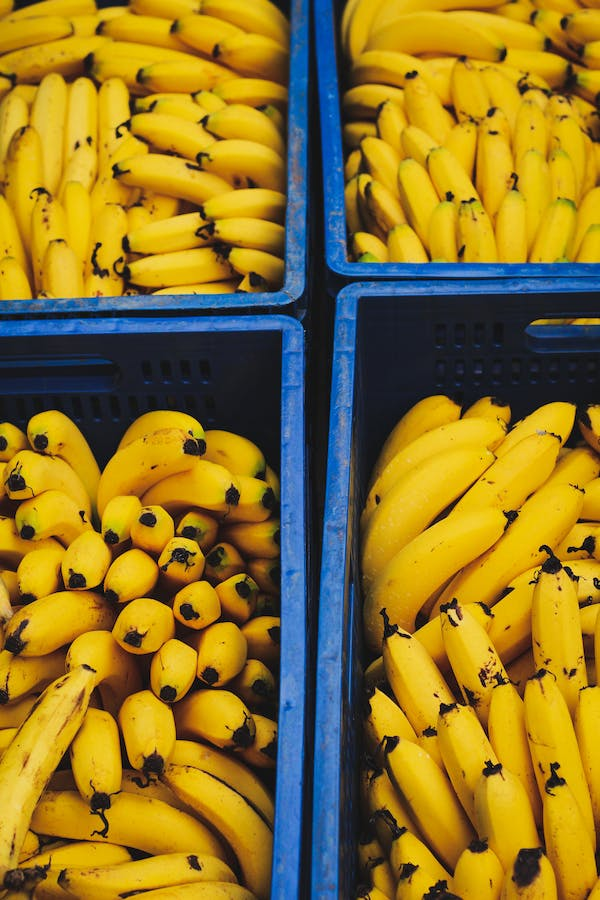
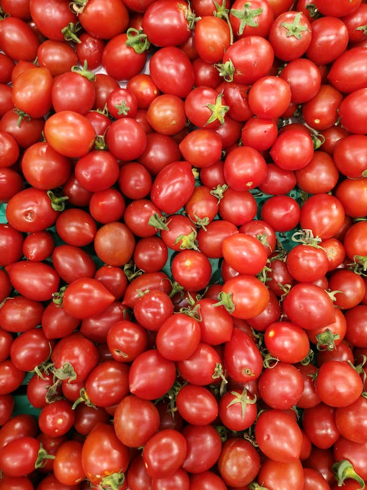
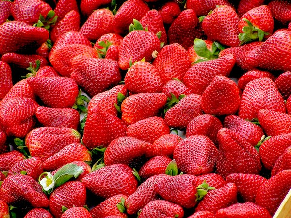

Nossas frutas são um verdadeiro deleite para os sentidos. Das maçãs suculentas às peras doces, das laranjas cítricas às uvas suculentas, cada fruta é cultivada com atenção aos detalhes para garantir sabor e qualidade excepcionais. Nossos pomares são cultivados em solos férteis e beneficiam-se de condições climáticas favoráveis, resultando em frutas vibrantes e cheias de nutrientes.

 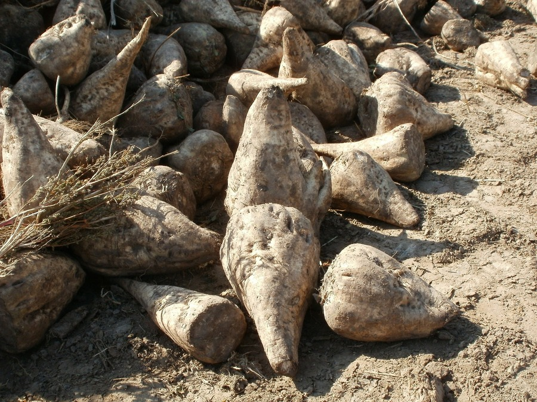
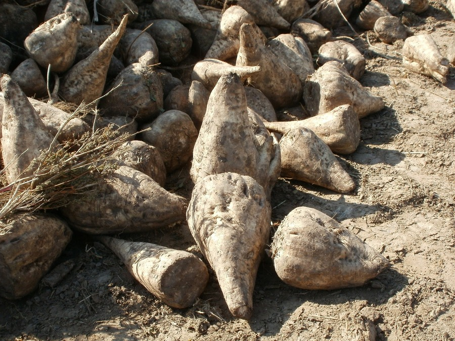
Nossos tubérculos, como batatas e cenouras, são cultivados com amor e dedicação, garantindo qualidade e sabor em cada colheita.Nossos tubérculos como mandioca, beterraba e batata doce são cultivados naturalmente, sem adição de produtos químicos. Eles são colhidos no momento certo para garantir o sabor e a textura perfeita.
 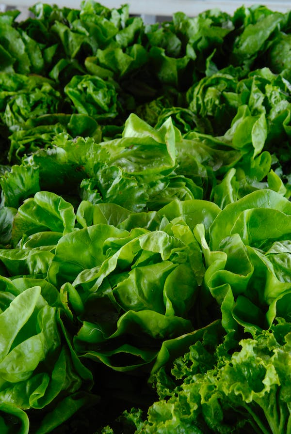
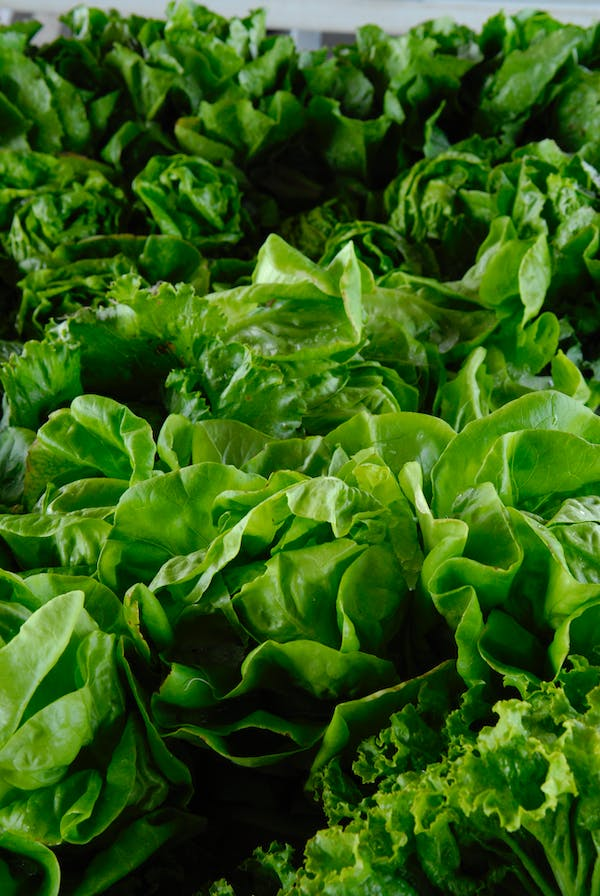
 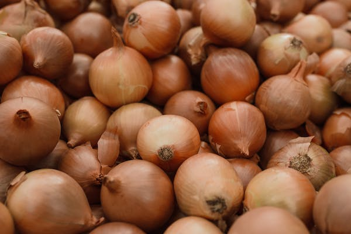
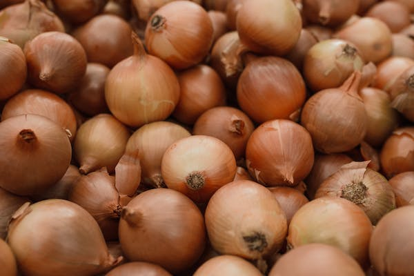
Em relação aos legumes, nós temos uma grande variedade, alface cenoura, abóbora, entre outros. Todos os nossos legumes são embalados logo após a colheita para manter o sabor e os nutrientes intactos.Os legumes são uma parte essencial da nossa oferta de produtos. Cultivamos uma variedade de legumes, incluindo tomates, cenouras, alface, brócolis e muito mais. Esses vegetais são colhidos no auge da maturação, quando estão repletos de sabor e valor nutricional. Nossos campos bem cuidados e técnicas de cultivo naturais garantem que os legumes cheguem até você frescos e saborosos.
 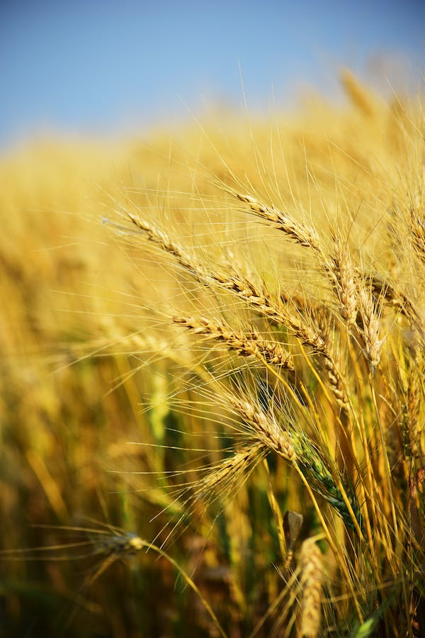
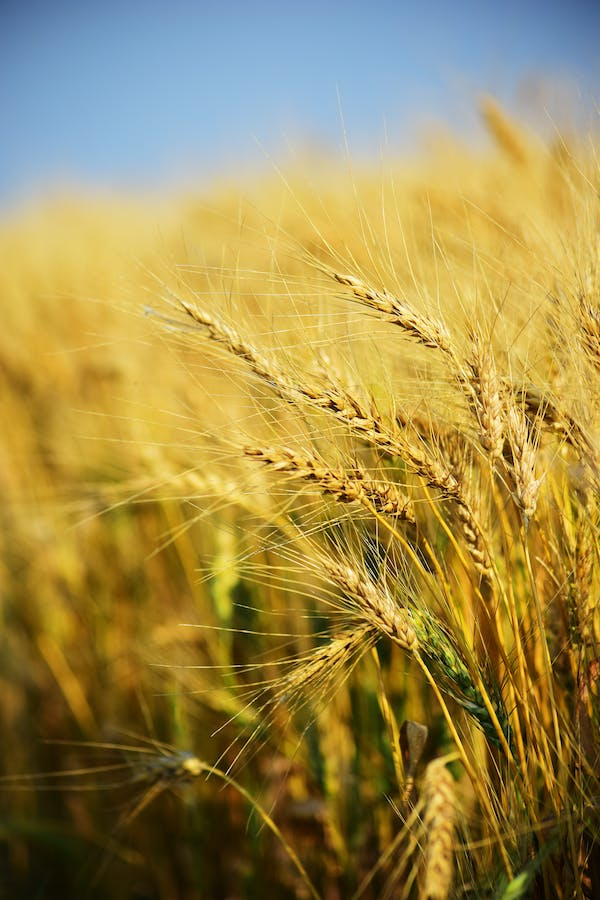


Além das frutas e legumes, também nos orgulhamos de nossos cereais e tubérculos. Produzimos grãos como trigo, aveia e cevada, que são cultivados com métodos de agricultura sustentável para preservar a saúde do solo e promover a biodiversidade.Nossos cereais são cultivados com o mesmo cuidado que damos as frutas e legumes são cultivados sem produtos químicos e são embalados logo após a colheita para manter o sabor e os nutrientes intactos.